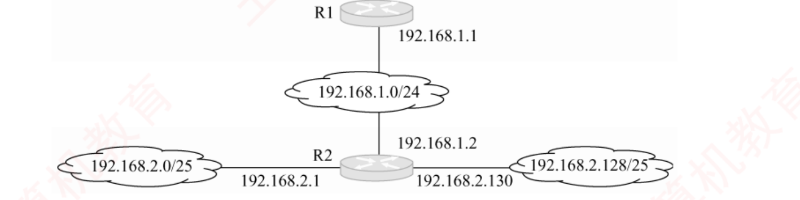
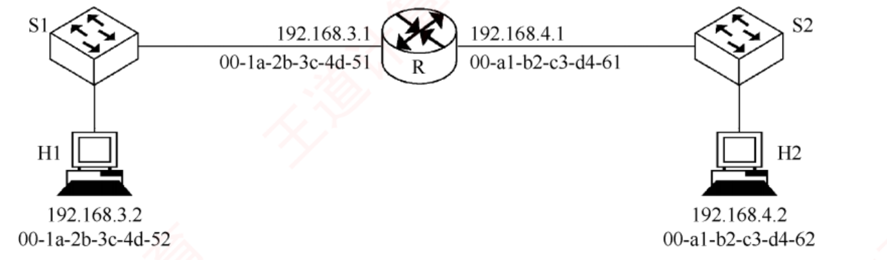
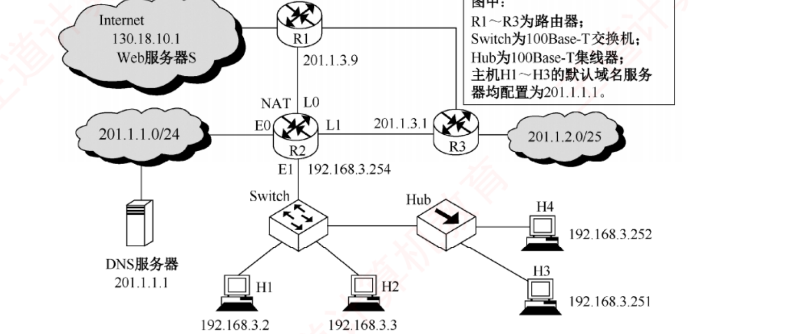
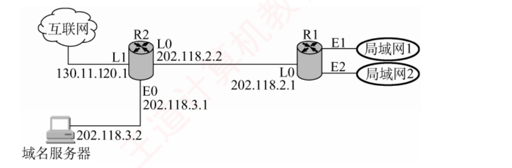
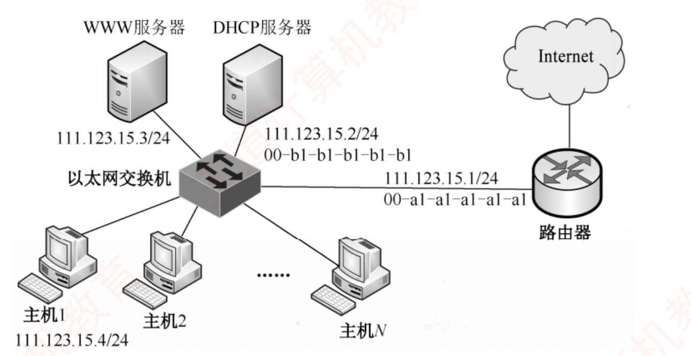
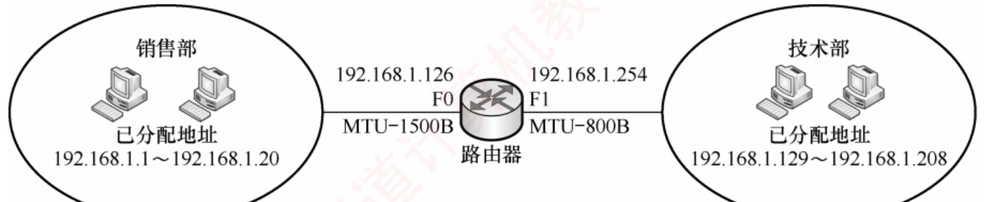

408
408先答旧题
以太网最短帧为什么和争用期有关？
二进制指数退避怎么选等待时间？
交换机怎样决定转发？
链路层只管同一个网络内的相邻节点。要跨网络，就要一个全世界通用的地址和一个统一的分组格式。这就是 IP，也是整个网络的中心。这一话讲到你看到 IP 就能划子网、看到路由表就能转发。
其之壹IP 分组
IP 分组 = 首部 + 数据。首部固定 20 字节（可带选项）。
逐个字段的作用：
- 首部长度：4 位，单位 4 B。通常是 5，即 20 B。
- 总长度：16 位，单位 1 B，首部加数据最长 65535 B。
- 标识：同一分组的所有分片标识相同，用来重组。
- TTL：每过一个路由器减 1，到 0 丢弃，防止在环路里永远绕。
- 协议：数据部分交给谁。
- 首部校验和：只校验首部，每跳重算（TTL 变了）。算法是 16 位反码求和。
首部三个单位
首部长度 ×4 B。总长度 ×1 B。片偏移 ×8 B。
口诀：「一八四，总片首」：总长度 1，片偏移 8，首部长 4。
分片
每条链路能传的最大数据叫 MTU（以太网 1500 B）。分组比下一条链路的 MTU 大，就要切。只有最终目的主机才重组，路由器不重组，因为后面的路可能走不同路径。
DF=1 又太大时，路由器丢弃，并发 ICMP 差错报告。
分片
每片的数据长度必须是 8 的倍数（最后一片除外），因为片偏移单位是 8。
片偏移 = 本片数据相对原始数据开头的位置 ÷ 8。
走一遍：一个总长 3980 B 的分组（首部 20，数据 3960），经过 MTU = 1500 的链路。
每片首部 20，所以数据最多 1480。1480 ÷ 8 = 185，可以。
| 片 | 数据 | 总长度 | 片偏移 | MF |
|---|---|---|---|---|
| 1 | 1480 | 1500 | 0 | 1 |
| 2 | 1480 | 1500 | 185 | 1 |
| 3 | 1000 | 1020 | 370 | 0 |
如果 MTU = 800：最多 780，780 ÷ 8 不是整数，所以每片数据只能是 776。
合上页面说一遍：三个单位分别是多少？为什么数据要是 8 的倍数？谁来重组？
总长 1、片偏移 8、首部长 4。片偏移单位是 8 字节。只有目的主机重组。
其之貳IP 地址
IP 地址 32 位，点分十进制。结构是 网络号 + 主机号，同一网络的主机不用一条条记录路由。
| 类 | 前缀 | 网络部分 | 范围 |
|---|---|---|---|
| A | 0 | 8 | 0–127 |
| B | 10 | 16 | 128–191 |
| C | 110 | 24 | 192–223 |
| D 类 | 1110 | 组播 | 224–239 |
| E | 1111 | 保留 | 240–255 |
特殊地址
0.0.0.0：本机（只能做源）。127.x.x.x：环回。主机全 0：网络地址。主机全 1：广播（只能做目的）。255.255.255.255：受限广播。
私有地址：10/8、172.16/12、192.168/16，互联网路由器不转发。
其之參子网与 CIDR
固定分类太浪费：B 类 65534 台主机，A 类一千多万，而一个公司可能只要 500 个地址。于是不再按类，由 子网掩码标明网络部分多长，这就是 CIDR（无分类编址），写作 IP/n。
子网四问（/n）
掩码：n 个 1。
网络地址：IP AND 掩码。
广播地址：网络位不动，主机位全 1。
可用主机数：2^(32−n) − 2。
块大小：256 − 掩码那一字节。
快算
把 IP 中被切的那个字节按块大小找倍数。比如 10.1.77.200/22：掩码第 3 字节 252，块 4；77 落在 76–79，所以网络 10.1.76.0，广播 10.1.79.255，可用主机 1022。
划分子网：把主机位借给网络位。192.168.1.0/24 分 4 个子网，借 2 位：/26，每个可用 62 台。
| 子网 | 网络地址 | 可用范围 | 广播 |
|---|---|---|---|
| 0 | 192.168.1.0 | .1–.62 | .63 |
| 1 | 192.168.1.64 | .65–.126 | .127 |
| 2 | 192.168.1.128 | .129–.190 | .191 |
| 3 | 192.168.1.192 | .193–.254 | .255 |
变长划分：子网可以不等大。一个 /24 分给 100 台、50 台、20 台，依次用 /25、/26、/27，要从大到小切。
路由聚合：几个连续的小网可以合成一个前缀，路由表就短了。192.168.16.0/24 到 192.168.19.0/24：第 3 字节 16、17、18、19 是 000100 00 到 000100 11，共同前缀 16 + 6 = 22 位，聚合为 192.168.16.0/22。
合上页面说一遍：给一个 IP/n，默算网络地址和广播地址。聚合怎么求？
块大小 = 256 − 掩码字节，被切字节向下取倍数得网络，加块大小再减 1 得广播。聚合：写二进制，取共同前缀。
其之肆路由转发
主机发分组时，先判断目的地在不在本网段：用自己的 IP 和掩码算网络号，再用自己的掩码算目的 IP 的网络号，相同就是本网段。
- 直接交付：同一网段，把帧发给目的本身。
- 间接交付：不同网段，把帧发给默认网关。
路由器收到分组后查路由表，每条是（目的网络，下一跳，接口）。可能有多条匹配。
最长前缀匹配
目的 IP 和每条路由的前缀比较，都匹配时选 最长的那条，前缀越长越具体。
默认路由 0.0.0.0/0：没有其他匹配时走它。
走一遍：路由表有 10.1.0.0/16 → A，10.1.2.0/24 → B，0.0.0.0/0 → C。
- 目的 10.1.2.5：匹配全部三条，取 /24，走 B。
- 目的 10.1.9.5：匹配 /16 和默认，走 A。
- 目的 8.8.8.8：只匹配默认，走 C。
分组转发时不变的和变的
经过路由器：IP 地址不变（NAT 除外）；MAC 地址每一跳都换；TTL −1，首部校验和重算。
领域展开
单位：总 1、片 8、首 4。
子网：块大小 = 256 − 掩码字节。可用 = 2^h − 2。
转发：最长前缀；IP 不变，MAC 每跳变。
其之伍实战
再深一层
| 地址 | 作源 | 作目的 | 含义 |
|---|---|---|---|
| 0.0.0.0 ✔ | ✔ | ✘ | 「我还不知道我是谁」——DHCP 客户初次发请求时用 |
| 255.255.255.255 | ✘ | ✔ | 「喊给本网所有人」——受限广播，路由器不转发 |
| 127.0.0.1 | ✔ | ✔ | 回环，数据不出本机 |
| 200.10.10.3 | ✔ | ✔ | 普通单播 |
⚠️ 0.0.0.0 还有第二个身份，别混：路由表里的 0.0.0.0/0 是默认路由（匹配任何地址、前缀最短、优先级最低）；同样的写法，在「IP 地址」语境下是「本主机」，在「路由表目的网络」语境下是「默认路由」。
再深一层
252 ⟹ /22 ⟹ 第 3 字节占 6 位 ⟹ 步长 = 256 ÷ 2⁶ = 4 ⟹ 第 3 字节的块首只能是 0、4、8、…、76、80、… ⟹ 77 落在 [76, 80) ⟹ 网络地址 = 180.80.76.0 ⟹ 广播地址 = 块末 = 180.80.79.255（76 + 4 − 1 = 79）⚠️ 四个选项恰好是这个块的「四个关键位置」，全部认清就再也不会选错：
| 选项 | 它是什么 |
|---|---|
| A 180.80.76.0 | 网络地址（本块首地址）——不是广播 |
| B 180.80.76.255 | 块内一个普通单播地址（末字节 255 骗人，主机位并非全 1） |
| C 180.80.77.255 | 同样是普通单播地址（若掩码是 /24 才轮到它） |
| D 180.80.79.255 ✔ | 本块最后一个地址 = 定向广播地址 |
📌 考场自检：广播地址 = 网络地址 + 块大小 − 1，算完后回头验一句「它是不是下一个块首减 1」，两秒钟锁死答案。
再深一层
原前缀 /24 ⟹ 后 8 位可用
掩码末字节 248 = 11111 000
└─5─┘ └3┘
子网位 5 ⟹ 子网数 = 2⁵ = 32（不减 2）
主机位 3 ⟹ 可分配 = 2³ − 2 = 6（要减 2）⚠️⚠️ 本题的全部要害就是「一个减 2、一个不减」：子网数不减 2（现代标准允许全 0 子网和全 1 子网，王道也按 2ⁿ 算）；每子网的可分配地址要减 2（网络地址与广播地址）。把这两句写在草稿纸上再动笔，这一族题就不会错。📌 干扰项溯源（三个错项各代表一种典型错误，很值得对照自查）：
| 选项 | 怎么造出来的 |
|---|---|
| A（32，8） | 忘了扣掉网络地址与广播地址（2³ = 8 直接当答案） |
| C（8，32） | 子网位与主机位彻底记反（3 位子网 / 5 位主机），且没减 2 |
| D（8，30） | 子网位与主机位记反，但记得减 2（2⁵ − 2 = 30） |
再深一层
第一步：192.168.4.3 是什么地址？ /30 ⟹ 主机位 2 位；3 = 00000011 ⟹ 主机位全 1 ⟹ 广播地址 第二步：谁会收广播？ 本子网内所有主机都收 而本子网最多有几台主机？ 2² − 2 = 2 ⟹ 答案 2⚠️⚠️ 四个选项正好覆盖四种误读，逐个看清楚：
| 选项 | 对应的误读 |
|---|---|
| A（0） | 认为「广播地址不分配给任何主机 ⟹ 没人收」——混淆了「不能作为主机地址」与「不能被接收」 |
| B（1） | 当成单播，认为只有一台机器收 |
| C ✔（2） | 正解：子网内的 2 台主机全部接收 |
| D（4） | 忘了减 2，把地址总数 4 当成主机数 |
📌 本题与 2012 真题（求广播地址）互为逆向：2012 给 IP 和掩码求广播地址；本题给出一个地址判断它是不是广播地址、并追问影响范围——同一个知识点的正反两考，一起练。
再深一层
① 子网位 = log₂(子网数) = log₂128 = 7 ② 剩余主机位 = 原主机位 − 子网位 = (32 − 16) − 7 = 9 ③ 可分配地址 = 2⁹ − 2 = 510 （顺带：新前缀 = 16 + 7 = /23，掩码 255.255.254.0）⚠️ D（512）依旧是「忘了减 2」——本章已经是第四次用这个干扰项了（教材 19 题的 4096、2010 真题的 8、本题的 512）；凡看到选项里有一对相差 2 的数（510 / 512、254 / 256），答案几乎一定是小的那个。
📌 A（254）是把子网数当成了 256（8 位子网号）：128 与 256 只差一倍，但子网位差 1、主机位也差 1，最终地址数差一半——做题时把 log₂ 算清楚：128 = 2⁷ 不是 2⁸。
⭐ 反向的问法也要会：「每个子网至少要能容纳 800 台主机，最多能划几个子网？」⟹ 由 2ⁿ − 2 ≥ 800 得 n ≥ 10⟹ 子网位 = 16 − 10 = 6 ⟹ 最多 64 个子网；这正是教材第 34 题（B 类 + 51 个子网 + 每子网 800 台）的解法。
| 第 3 段 | b7 | b6 | b5 | b4 | b3 | b2 | b1 | b0 |
|---|---|---|---|---|---|---|---|---|
| 32 | 0 | 0 | 1 | 0 | 0 | 0 | 0 | 0 |
| 40 | 0 | 0 | 1 | 0 | 1 | 0 | 0 | 0 |
| 48 | 0 | 0 | 1 | 1 | 0 | 0 | 0 | 0 |
| 56 | 0 | 0 | 1 | 1 | 1 | 0 | 0 | 0 |
再深一层
① 相同的前几段：35.230 ⟹ 已占 16 位 ② 展开有差异的第 3 段（只看高位）： 32 = 00100000 40 = 00101000 48 = 00110000 56 = 00111000 ③ 连续相同位数 k = 3 ⟹ 前缀 = 16 + 3 = /19 网络号第 3 段 = 00100000 = 32 ⟹ 35.230.32.0/19⭐ 另一条更快的路子：先算「跨度」再定前缀4 条 /21 各占 8（第 3 字节），共跨 32 ~ 63 = 32 个单位 ⟹ 需要一个大小为 32 的块⟹ 第 3 字节占 3 位（256 ÷ 32 = 8 = 2³）⟹ /19；再检查首地址 32 能否被 32 整除 ⟹ 能 ⟹ 块首就是 32。
⚠️⚠️ 干扰项全部踩在「前缀长度」和「首地址」这两个点上：
| 选项 | 它代表的块 | 错在哪 |
|---|---|---|
| A 35.230.0.0/19 | 0 ~ 31 | 前缀对，但首地址错，完全没覆盖到 32 ~ 63 |
| B 35.230.0.0/20 | 0 ~ 15 | 两处都错，块还更小 |
| C ✔ 35.230.32.0/19 | 32 ~ 63 | — |
| D 35.230.32.0/20 | 32 ~ 47 | 首地址对，但块只有一半大，漏掉 48 和 56 |
| 子网 | 前缀 | 地址范围 | 可分配数 |
|---|---|---|---|
| 子网 1 | /21 | 101.200.16.1 ~ 101.200.23.254 | 2046 |
| 子网 2 | /22 | 101.200.24.1 ~ 101.200.27.254 | 1022 |
| 子网 3 | /23 | 101.200.28.1 ~ 101.200.29.254 | 510 |
| 子网 4 | /24 | 101.200.30.1 ~ 101.200.30.254 | 254 |
| 子网 5 | /24 | 101.200.31.1 ~ 101.200.31.254 | 254 |
再深一层
要让「最小的那个子网」尽可能大？还是尽可能小？
⟹ 题问「可能的最小子网」= 在各种划分方案中，最小子网最大能有多大
⟹ 于是要把空间尽量均匀地分给后面的子网
⟹ 但 5 不是 2 的幂，没法真正均分
⟹ 最优策略：不断对半切，切到剩两块时平分
/20 → /21 + /21 → 后半再切 /22 + /22
→ 再切 /23 + /23 → 再切 /24 + /24
⟹ 5 块 = /21 + /22 + /23 + /24 + /24
⟹ 最小的两块各 2⁸ − 2 = 254⚠️⚠️ 为什么最后两个子网必须等长：切到最后一步时手上只剩一个块要分成两份，只能对半 ⟹ 必然同大小；这也是「n 个子网的变长划分」的通用结构：前 n−2 个逐级减半，最后两个相等。📌 干扰项溯源：
| 选项 | 怎么造出来的 |
|---|---|
| A 126 | 多切了一级（切到 /25），相当于分成 6 个子网 |
| B ✔ 254 | /24 ⟹ 2⁸ − 2 |
| C 510 | 少切一级（停在 /23），只能分出 4 个子网 |
| D 1022 | 停在 /22，只有 3 个子网 |
| 目的网络 | 下一跳 | 接口 |
|---|---|---|
| 169.96.40.0/23 | 176.1.1.1 | S1 |
| 169.96.40.0/25 | 176.2.2.2 | S2 |
| 169.96.40.0/27 | 176.3.3.3 | S3 |
| 0.0.0.0/0 | 176.4.4.4 | S4 |
再深一层
目的地址 169.96.40.5，末字节 5 = 0000 0101
/23 ⟹ 第 3 字节占 7 位，末字节全是主机位 ⟹ 匹配 ✔
/25 ⟹ 末字节占 1 位（5 的最高位 = 0）⟹ 网络 = .40.0 匹配 ✔
/27 ⟹ 末字节占 3 位（5 的前 3 位 = 000）
⟹ 网络 = .40.0 匹配 ✔（最长）
/0 ⟹ 默认路由，永远匹配，优先级最低
⟹ 取最长的 /27 ⟹ 接口 S3⭐ 为什么「三条都匹配」不矛盾——这正是 CIDR 的层次结构：/27 的块（.0 ~ .31）被包含在 /25 的块（.0 ~ .127）里，后者又被包含在 /23 的块里；一个地址同时属于「小区、街道、城市」三级，最长前缀匹配就是「按最具体的那条投递」。📌 换个数字就会换答案，自己验一遍才算真懂：
| 目的地址 | 命中哪条 | 接口 |
|---|---|---|
| 169.96.40.5 | /27（.0 ~ .31） | S3 |
| 169.96.40.50 | 超出 /27，落在 /25（.0 ~ .127） | S2 |
| 169.96.41.5 | 超出 /25，落在 /23（.40.0 ~ .41.255） | S1 |
| 169.96.42.5 | 三条都不匹配 ⟹ 默认路由 | S4 |

192.168.2.0 : 11000000 10101000 00000010 00000000 192.168.2.128: 11000000 10101000 00000010 10000000前 24 位都相同，于是可以聚合成超网 192.168.2.0/24，子网掩码为 255.255.255.0。下一跳是与 R1 直接相连的 R2 的地址，因此是 192.168.1.2 ⟹ 选 D。✅ Python 复算：两个 /25 聚合为 192.168.2.0/24。⚠️ 下一跳必须写「对端路由器接口的 IP」而不是自己接口的 IP——A/B 就是靠这一点做的干扰项。
再深一层
| 空 | 考什么 | 正确做法 | 错项 |
|---|---|---|---|
| 子网掩码 | 路由聚合 | 两个 /25 是亲兄弟（只差第 25 位）⟹ 合并成 /24 | A、C 的 /25 只覆盖一半 |
| 下一跳 | 下一跳的定义 | 必须是对端（R2）接口的 IP = 192.168.1.2 | A、B 填了 R1 自己的接口 .1 |
⭐ 若不做聚合，写两条路由行不行？行，但题目要求「增加一条路由」——这正是路由聚合的实战价值：两条 /25 合成一条 /24，路由表少一行。而且这里聚合不会引入多余地址（.0/25 + .128/25 = 完整的 .0/24），是最理想的情况。
📌 为什么聚合成 /24 不会误伤：192.168.2.0/24 的全部地址都在 R2 那一侧，R1 把它们统统交给 R2 即可；R2 自己再用 /25 区分左右两个子网——「上层粗、下层细」正是层次路由的思想。

再深一层
| 链路段 | 源 MAC | 目的 MAC | 源 IP | 目的 IP |
|---|---|---|---|---|
| H1 → R（问 1） | H1 …-52 | R 左口 …-51 ✔ | 192.168.3.2 | 192.168.4.2 |
| R → H2（问 2） | R 右口 …-61 ✔ | H2 …-62 | 192.168.3.2 | 192.168.4.2 |
⚠️ 三个干扰项各自代表一种误解：
| 选项 | 误解 |
|---|---|
| A（H2 的 MAC，H1 的 MAC） | 以为 MAC 也端到端不变——直接把两台主机的 MAC 填上（最常见） |
| B（R 右口，H2） | 第 1 问填了错误的接口（H1 侧应该是左口） |
| C（R 左口，H1） | 第 1 问对了，但第 2 问以为源 MAC 还是 H1（忘了路由器换帧头） |

再深一层
| 主机 | IP | 掩码 | 所属网络 | 配的网关 | 网关对不对 |
|---|---|---|---|---|---|
| H1 | 192.168.3.2 | /25 | 192.168.3.0/25 | 192.168.3.1 | ✘ 该地址不存在 |
| H2 | 192.168.3.3 | /25 | 192.168.3.0/25 | 192.168.3.1 | ✘ |
| H3 | 192.168.3.251 | /25 | 192.168.3.128/25 | 192.168.3.254 | ✔ |
| H4 | 192.168.3.252 | /25 | 192.168.3.128/25 | 192.168.3.254 | ✔ |
A：H1 与 H2 同属 .0/25 ⟹ 直接交付，不用网关 ⟹ 通信正常 ⟹ 不会发生 D：H3 与 H4 同属 .128/25 ⟹ 同理正常 ⟹ 不会发生 B：H2 网关错 ⟹ 上不了网；但 H4 网关对 ⟹ H4 能访问 Internet ⟹「均不能访问」这个「均」字使 B 不成立 ⟹ 不会发生 C ✔：H1 与 H3 不同网 ⟹ 必须走网关 ⟹ 而 H1 的网关是个不存在的地址 ⟹ ARP 问不到、分组发不出 ⟹ 不能通信 ⟹ 可能发生⚠️⚠️ 书上那句「即使网关配置正确也通不了」值得单独想清楚：H1 与 H3 挂在同一个物理网段上，都连到 E1 这一个接口；若 H1 把分组交给 E1，E1 查表发现出口还是 E1 ⟹ 路由器不会从入口转发回去 ⟹ 照样不通；这条规则与教材第 45 题是同一条，两题一起记。
📌 读这类题的顺序（照做不会乱）：① 先用掩码给所有主机分组；② 逐台检查网关是否真实存在且在本网段内；③ 同组的走直接交付（与网关无关），跨组的才受网关影响；④ 留意选项里的「均」「都」等全称词。
再深一层
| 空 | 陷阱 | 正确结论 |
|---|---|---|
| 源 IP | 直接抄 H3 的私有地址 192.168.3.251 | R2 做 NAT ⟹ 换成 R2 外部接口 201.1.3.10 |
| 目的 IP | 写成下一跳 R1 的地址 201.1.3.9 | 目的 IP 端到端不变 ⟹ 始终是 Web 服务器 130.18.10.1 |
⭐ /30 求对端的心算（本章第三次出现，务必条件反射）：
201.1.3.9/30 ⟹ 步长 4 ⟹ 9 落在 [8, 11] .8 = 网络地址 ✘（C 项就是拿它当地址，直接错） .9 = R1 侧（题目已给） .10 = R2 侧 ✔ .11 = 广播地址 ✘📌 为什么答案不是 201.1.3.2（R2 的 L1 口）：书上说源地址「可能为 .10 或 .2」，取决于走哪条链路出去；但选项里只给了 .10，所以选 D——这也提示我们：选择题可以用选项来消解题目本身的多解。
1）将 IP 地址空间 202.118.1.0/24 划分为两个子网，分别分配给局域网 1 和局域网 2，每个局域网需分配的 IP 地址数不少于 120 个。请给出子网划分结果，说明理由或给出必要的计算过程。
2）请给出 R1 的路由表，使其明确包括到局域网 1 的路由、到局域网 2 的路由、域名服务器的主机路由和互联网的路由。
3）请采用路由聚合技术，给出 R2 到局域网 1 和局域网 2 的路由。

2）R1 的路由表（以子网 1 给局域网 1、子网 2 给局域网 2 为例）：
| 目的网络 IP 地址 | 子网掩码 | 下一跳 IP 地址 | 接口 |
|---|---|---|---|
| 202.118.1.0 | 255.255.255.128 | —（直接交付） | E1 |
| 202.118.1.128 | 255.255.255.128 | —（直接交付） | E2 |
| 202.118.3.2 | 255.255.255.255 | 202.118.2.2 | L0 |
| 0.0.0.0 | 0.0.0.0 | 202.118.2.2 | L0 |
3）R2 的聚合路由：局域网 1 和 2 的地址可聚合为 202.118.1.0/24，对 R2 来说两者都从 L0 接口转发：
| 目的网络 IP 地址 | 子网掩码 | 下一跳 IP 地址 | 接口 |
|---|---|---|---|
| 202.118.1.0 | 255.255.255.0 | 202.118.2.1 | L0 |
再深一层
这是全章最标准的综合题模板，三问正好是三个必考动作，卷面按这个骨架写：
| 问 | 动作 | 卷面关键句 |
|---|---|---|
| 1） | 由需求反推主机位 | 「由 2ⁿ⁻¹−2 < 需求 ≤ 2ⁿ−2 得 n = 7，故前缀为 32−7 = /25」 |
| 2） | 填四类表项 | 直连（下一跳写「—」）→ 特定主机路由（/32） → 默认路由（0.0.0.0/0） |
| 3） | 路由聚合 | 「两个 /25 前 24 位相同 ⟹ 聚合为 /24，下一跳 = R1 的 L0 接口」 |
⭐ 第 3 问的「下一跳写谁」是最后一个坑：站在 R2 的角度，去局域网 1、2 的下一跳是 R1，所以填 202.118.2.1；而第 2 问站在 R1 角度，默认路由的下一跳是 R2，填 202.118.2.2——同一条链路，两个方向，两个地址，千万别抄反。
📌 为什么域名服务器要单列一条主机路由：它本可以被默认路由覆盖（都走 L0 到 R2），但题目明确要求「明确包括域名服务器的主机路由」——工程上这么做是为了让这台关键主机的路径可控、可测、不受默认路由变动影响。
1）DHCP 服务器可为主机 2 ~ N 动态分配 IP 地址的最大范围是什么？主机 2 使用 DHCP 获取 IP 地址的过程中，发送的封装 DHCP Discover 报文的 IP 分组的源 IP 地址和目的 IP 地址分别是多少？
2）若主机 2 的 ARP 表为空，则该主机访问 Internet 时，发出的第一个以太网帧的目的 MAC 地址是什么？封装主机 2 发往 Internet 的 IP 分组的以太网帧的目的 MAC 地址是什么？
3）若主机 1 的子网掩码和默认网关分别配置为 255.255.255.0 和 111.123.15.2，则该主机是否能访问 WWW 服务器？是否能访问 Internet？请说明理由。

2）主机 2 发出的第一个以太网帧的目的 MAC 地址是 ff-ff-ff-ff-ff-ff（ARP 请求 / DHCP 发现都是广播）；封装主机 2 发往 Internet 的 IP 分组的以太网帧的目的 MAC 地址是 00-a1-a1-a1-a1-a1（目的在其他网络 ⟹ 间接交付 ⟹ 填路由器的 MAC）。
3）主机 1 能访问 WWW 服务器，但不能访问 Internet。因为主机 1 的子网掩码配置正确而默认网关被错误地配置为 111.123.15.2（正确应为 111.123.15.1），所以它可以访问同一子网内的 WWW 服务器；但访问 Internet 时，分组会被送到错误的默认网关（DHCP 服务器），从而无法到达目的主机。
再深一层
| 问 | 考点 | 一句话要害 |
|---|---|---|
| 1） | DHCP 池 + 报文地址 | 把所有已占用地址逐个扣掉；Discover = 0.0.0.0 → 255.255.255.255 |
| 2） | ARP 与间接交付 | 第一帧是广播；之后填网关的 MAC，不是远端主机的 |
| 3） | 网关配错 | 只影响跨网通信，不影响同网通信 |
主机 1 访问 WWW 服务器（111.123.15.3，同一 /24） ⟹ 判定同网 ⟹ 直接交付 ⟹ 压根不用网关 ⟹ 能访问 ✔ 主机 1 访问 Internet（不同网） ⟹ 必须交给默认网关 ⟹ 但网关填成了 .2（DHCP 服务器） ⟹ DHCP 服务器是普通主机、不做转发 ⟹ 分组到此为止 ⟹ 不能访问 ✘同一族考法在教材第 45 题、2016 真题里各出现过一次——「网关错 ⟹ 只断外网」是固定结论。
⭐ 第 2 问两个 MAC 地址的区别务必看清题干问的是「第几个帧」：
| 帧 | 目的 MAC | 为什么 |
|---|---|---|
| 第一个以太网帧 | ff-ff-ff-ff-ff-ff | ARP 表为空 ⟹ 先广播 ARP 请求问网关的 MAC |
| 封装数据的帧 | 00-a1-a1-a1-a1-a1 | 目的在外网 ⟹ 间接交付 ⟹ 填路由器接口的 MAC |
1）销售部子网的广播地址是什么？技术部子网的子网地址是什么？若每台主机仅分配一个 IP 地址，则技术部子网还可以连接多少台主机？
2）假设主机 192.168.1.1 向主机 192.168.1.208 发送一个总长度为 1500B 的 IP 分组，IP 分组的首部长度为 20B，路由器在通过接口 F1 转发该 IP 分组时进行了分片。若分片时尽可能分为最大片，则一个最大 IP 分片封装数据的字节数是多少？至少需要分为几个分片？每个分片的片偏移量是多少？

2）在技术部子网内 MTU = 800B、IP 首部 20B，且分片的数据长度必须是 8B 的整数倍：最大 IP 分片封装数据的字节数 = ⌊(800 − 20)/8⌋ × 8 = 776；至少需要的分片数 = ⌈(1500 − 20)/776⌉ = 2；第 1 个分片的片偏移量为 0；第 2 个分片的片偏移量为 776/8 = 97。
再深一层
技术部子网 192.168.1.128/25 可分配地址总数 = 2⁷ − 2 = 126 已分配给主机 = 208 − 129 + 1 = 80 已分配给路由器 = 1（F1 接口 192.168.1.254） ← 最容易漏 ⟹ 还可以连接 126 − 80 − 1 = 45 台只扣主机会算成 46——差一个的答案往往就是漏了接口。
⭐ 第 2 问按分片三步走，注意「(800−20) 不能被 8 整除」这一刀：
① 每片最大数据 = ⌊780/8⌋ × 8 = 97 × 8 = 776B ← 780 被砍成 776 ② 数据总量 = 1500 − 20 = 1480B ③ 片数 = ⌈1480/776⌉ = 2 片（776 + 704） ④ 偏移 = 0 与 776/8 = 97⚠️ 与 2021 选择真题（1580B / MTU 800B ⟹ 3 片）是同一台「机器」跑不同数据：每片最大数据同为 776B，只是数据总量不同（1480 ⟹ 2 片；1560 ⟹ 3 片）。
📌 第 1 问「均分」两个字锁死了划分方式：均分 /24 ⟹ 借 1 位 ⟹ 两个 /25（各 128 个地址）；再由已分配地址 .1~.20 与 .129~.208 反过来验证「销售部在前半、技术部在后半」。
做完再翻：这些题到底在问什么
这一话的大题流程固定：先把每个接口的 IP 列出来，算出网络地址，再写路由表。 划分子网常问「最小子网」：一半一半切，留下两块最小的。 判断能否通信要让每台主机用自己的掩码算，掩码配错就会判断成不同网段。 帧的地址题：过路由器时 IP 不变，MAC 每跳都换。 分片题要整除 8，常和 MTU、首部长度混在一起。